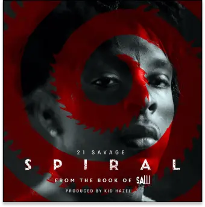
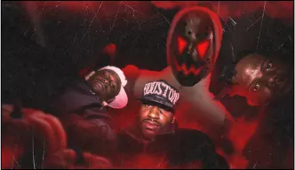
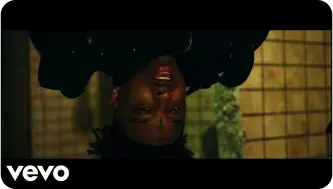
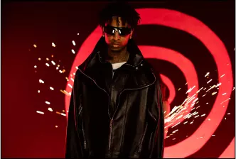
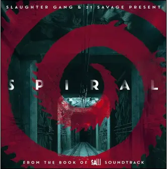
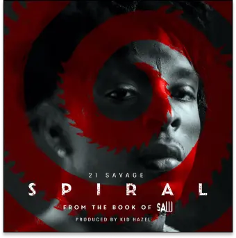
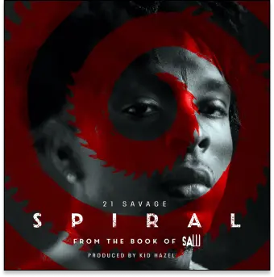

"Spiral" de 21 Savage : Un Hymne Sombre pour "Saw IX"

En 2021, la saga "Saw" est revenue sur les écrans de cinéma avec "Spiral", le neu-vième opus de la série. L'un des
éléments les plus marquants de ce film a été la chanson du générique de fin, sobrement intitulée "Spiral", interprétée
par le rappeur 21 Savage. Cette chanson a ajouté une dimension sombre et percutante à l'ex-périence cinématographique,
renforçant l'atmosphère sinistre du film et est le titre majeur de la bande originale du film, sortie en 2021.
UNE INSPIRATION À L'HORROCORE
La chanson "Spiral" de 21 Savage se place donc pleinement dans le style de l’Horror-core, un sous-genre du Hip Hop
puisant ses inspirations dans les films d’horreur et dans l’horrifique.

Illustration représentative de l'Horrocore
Cette sensation est renforcée par le vidéo clip promotionnelle qui à pour objectif de choquer l’internaute et de
dépeindre l’univers violent du film.

UNE COLLABORATION COHÉRENTE ET BIENVENUE
Cette collaboration mêlant rap et cinéma était surprenante mais bienvenue. Le rappeur, connu pour son style unique et
son lyrisme cru, était le choix parfait pour donner une voix à l'horreur de "Spiral". Sa musique explore souvent des
thèmes sombres et violents, ce qui s'accorde parfaitement avec l'univers sadique de la saga "Saw".

Image issue du clip
UN RAPPEL À LA MUSIQUE ICONIQUE DE "SAW"
L’instrumentale de "Spiral" reprend le sample iconique de la saga « Hello Zepp » de Charlie Clouser, remixé par des
percussions « Trap », modernes et effrénée.

UNE AMBIANCE GLACIALE ET VIOLENTE
Le refrain de la chanson est hypnotique et répétitif, soulignant l'obsession du prota-goniste pour le jeu mortel
orchestré par le tueur en série. La voix profonde et glaciale de 21 Savage donne une nouvelle dimension au personnage de
Jigsaw, renforçant sa menace et son aura sinistre.
LA MUSIQUE COMME FORCE POUR LE FILM
21 Savage
Cette musique contribue à immerger le public dans l'horreur et le suspense du film, faisant écho aux tourments
psychologiques des personnages à l'écran. Cette collaboration entre le rappeur et la franchise "Saw" montre comment la
musique peut être utilisée de manière puissante pour renforcer l'impact émotionnel d'un film d'horreur
 
